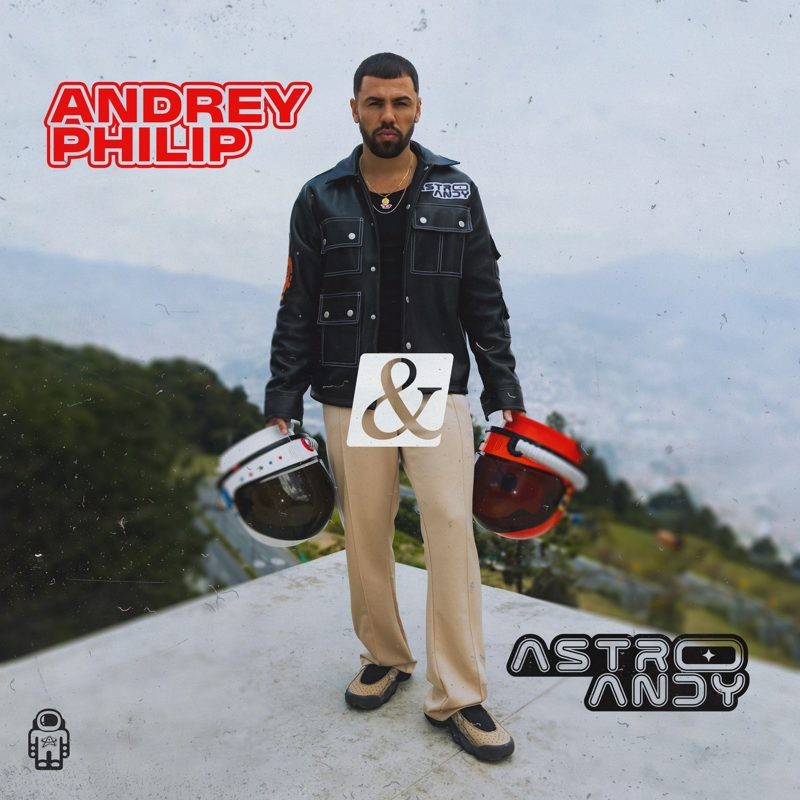
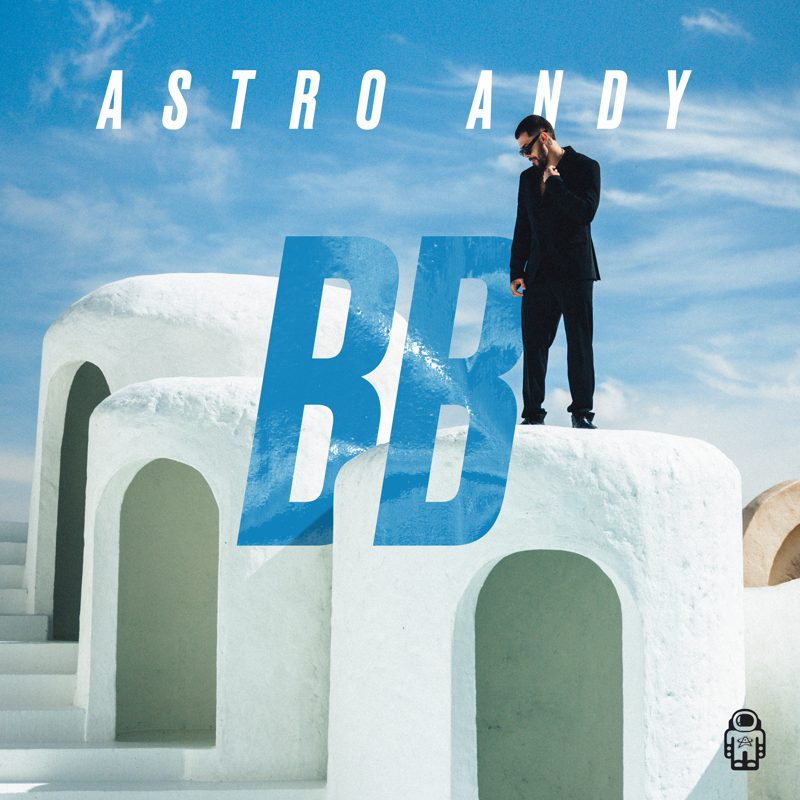
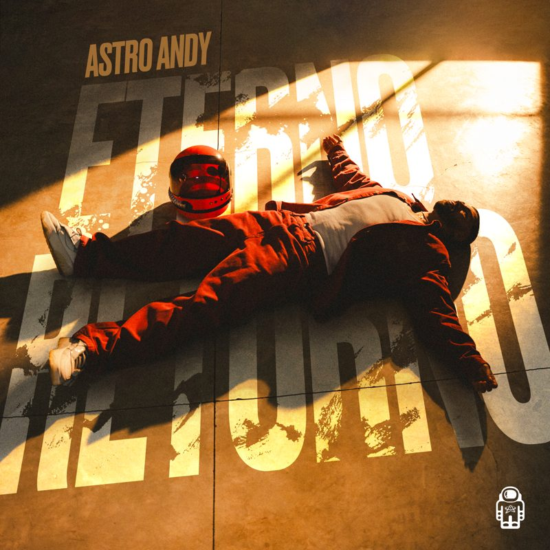
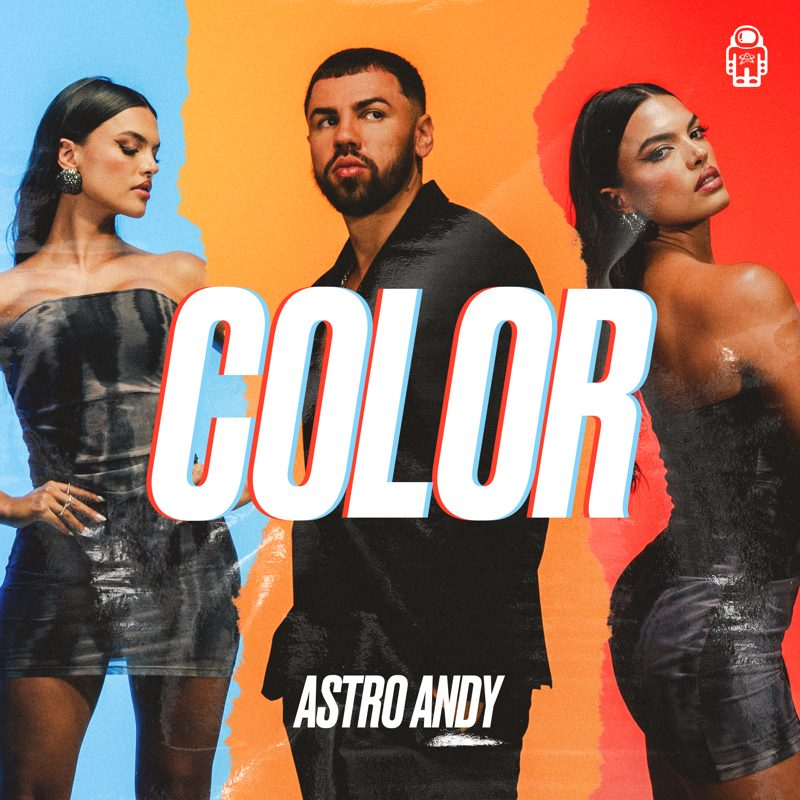
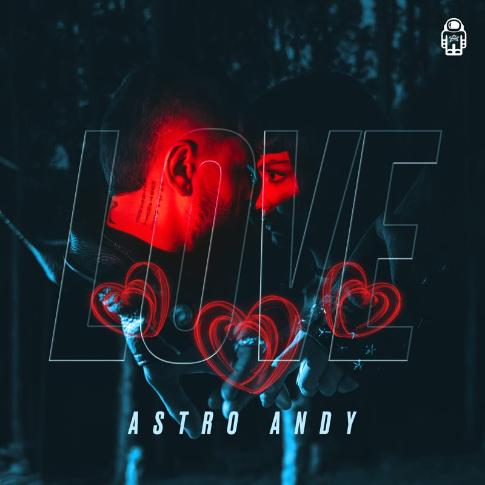
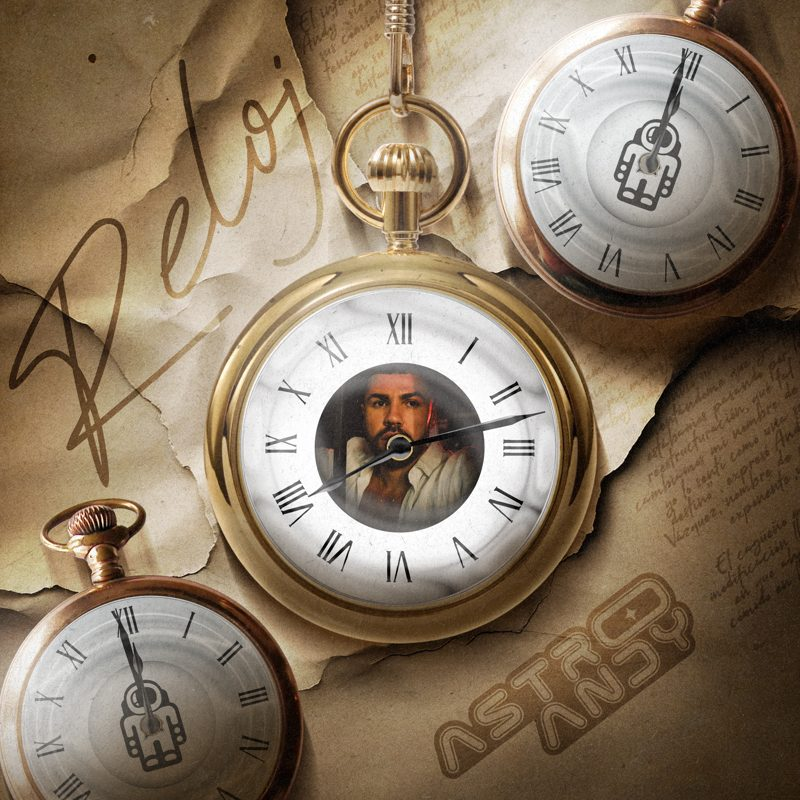
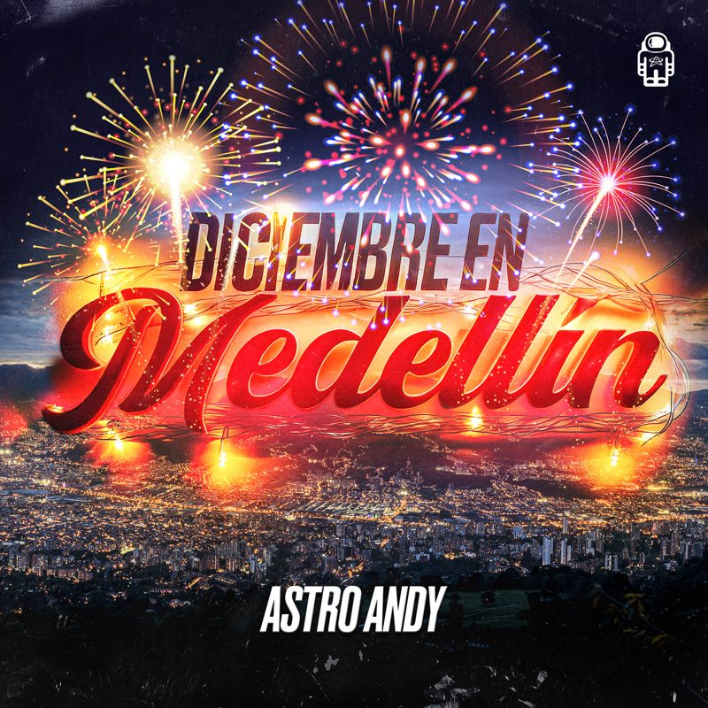

Discografía
Música
Eterno Retorno y todos los sencillos – escúchalos en tu plataforma favorita.
Sencillos
Todos los lanzamientos

Andrey Philip & Astro Andy


Canción Eterno Retorno

Color
Escondidos
Fin Del Mundo

Love
Modo Diablo

Reloj

Diciembre En Medellín
Plataformas